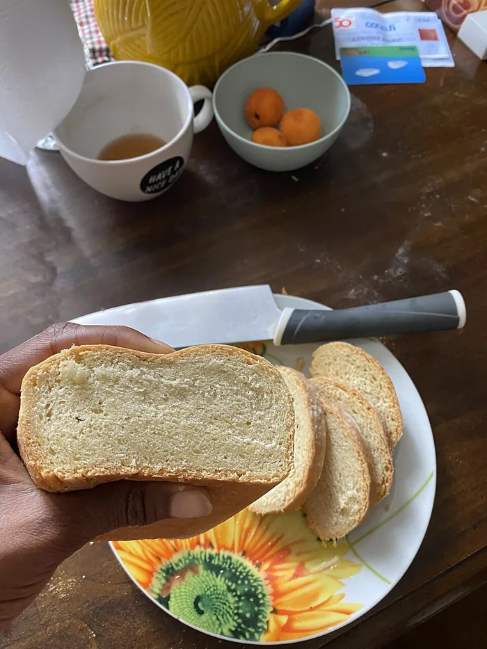
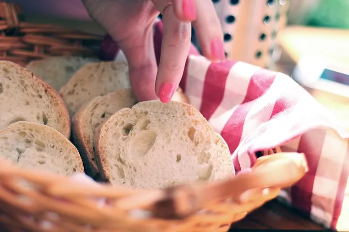

Weizenbrot

Mild im Geschmack, luftig im Inneren. Der helle Klassiker, der zu fast allem passt.
Bildquelle | Zuletzt aufgerufen am
Auf dieser Seite stellen wir sieben Brotsorten vor. Zu jeder Sorte gibt es Informationen zur Herkunft, zu den Zutaten und einen Rezeptlink.

Mild im Geschmack, luftig im Inneren. Der helle Klassiker, der zu fast allem passt.
Bildquelle | Zuletzt aufgerufen am

Kräftiges Aroma und eine saftige, dichte Krume. Ein Stück mitteleuropäische Brotkultur.
Bildquelle | Zuletzt aufgerufen am

Schale, Keimling und Mehlkörper: Hier kommt das ganze Getreidekorn ins Brot.
Bildquelle | Zuletzt aufgerufen am

Mild, leicht nussig und vielseitig. Eine alte Weizenart zeigt, was in ihr steckt.
Bildquelle | Zuletzt aufgerufen am

Schlanke Form, goldene Kruste, luftiges Inneres. Frankreichs täglicher Begleiter.
Bildquelle | Zuletzt aufgerufen am

Unregelmäßige Poren und eine rustikale Form. Der italienische Klassiker mit der leichten Krume.
Bildquelle | Zuletzt aufgerufen am

Eine lebendige Kultur, eine lange Reife. Sauerteig schenkt Brot Tiefe, Charakter und eine besondere Kruste.
Bildquelle | Zuletzt aufgerufen am
Typische Merkmale können je nach Rezept variieren. Vollkorn beschreibt die Bestandteile des Mehls, Sauerteig die Teigführung – ein Brot kann also zu mehreren Porträts passen.
| Brotsorte | Getreide / Basis | Geschmack | Besonderheit |
|---|---|---|---|
| Weizenbrot | Weizen | Mild & fein | Helle, lockere Krume |
| Roggenbrot | Roggen | Kräftig & würzig | Saftige, eher dichte Krume |
| Vollkornbrot | Ganzes Getreidekorn | Kernig & aromatisch | Schale, Keimling und Mehlkörper bleiben erhalten |
| Dinkelbrot | Dinkel | Nussig & fein | Als helles Brot oder Vollkornbrot möglich |
| Baguette | Weizen | Knusprig & mild | Schlanke Form mit viel knuspriger Kruste |
| Ciabatta | Weizen | Luftig & aromatisch | Große, unregelmäßige Poren |
| Sauerteigbrot | Weizen, Roggen oder Dinkel | Vielschichtig & fein säuerlich | Mit einer lebendigen Sauerteigkultur gebacken |